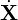

YJ’s remark: This section is outdated because I have found a more accurate form of the equations of the guiding center motion, as given in Sec. 1. Besides to be more accurate, the new form is compact and suitable for numerical implemention
The equations for the guiding center motion are given by (refer to my note “collisionless_drift_kinetic_equation.tm”)
|
| (147) |
and
|
| (148) |
where μ ≡ mv⊥2∕(2B), b = B∕B. The term v∥κ⋅ in Eq. (148) can be further simplified by using Eq. (147), which gives
|
| (149) |
where use has been made of that the curvature κ is perpendicular to b.
[Benchmark: In GTC simulation (refer to H. Zhang’s paper[6]), the time derivative of v∥ is given by
|
| (150) |
|
| (151) |
Next, I prove Eq. (149) is equivalent to Eq. (151). Using κ ≡ b⋅∇b = −b×∇×b, the second term on the right-hand side of Eq. (149) is written as
where in obtaining the last equality, use has been made of that ∇× b ⋅ b ≈ 0 (note that this is correct to the order considered here, I will discuss this later). Using Eq. (152) in Eq. (149) yields|
| (153) |
which is identical with Eq. (151).]
The tokamak equilbrium magnetic field can be written
|
| (154) |
In my code, the values of the two free functions, Ψ = Ψ(R,Z) and g(Ψ), which sepcify the magnetic field, is read from the output file “G-eqdsk-file” of EFIT code. Using Eq. (154), the axisymmetric equilibrium magnetic field can be written as
|
| (155) |
|
| (156) |
|
| (157) |
The partial derivative of the component of the magnetic field is written as
|
| (158) |
|
| (159) |
|
| (160) |
|
| (161) |
|
| (162) |
|
| (163) |
|
| (164) |
In my numerical code, the numerical data of the poloidal flux function Ψ(R,Z) and toroidal field function g(Ψ) are read in from the output G-eqdsk file of the EFIT code. Then all the partial derivatives are calculated by using central finite-difference. The linear interpolation is used to evaluate the various quantities that are needed at the instantenous location of guiding-centers to push the orbits.
When I began to write the guiding center orbit code, in order to avoid the numerical interpolating, I use Solovev’s analytic equilibrium. (The latest version of my code constructs magnetic field by reading the output G-eqdsk file of the EFIT code and thus can treat general tokamak magnetic field.) The Solovév equilibrium is an analytic equilibrium in which the poloidal flux function Ψ is given by
|
| (167) |
where B0, R0, κ0, q0 are constant parameters. Using Eq. (167), the partial derivatives are written as
|
| (168) |
|
| (169) |
|
| (170) |
|
| (171) |
The toroidal field function g is a constant function, g = cgR0B0, where cg is a dimensionless constant.